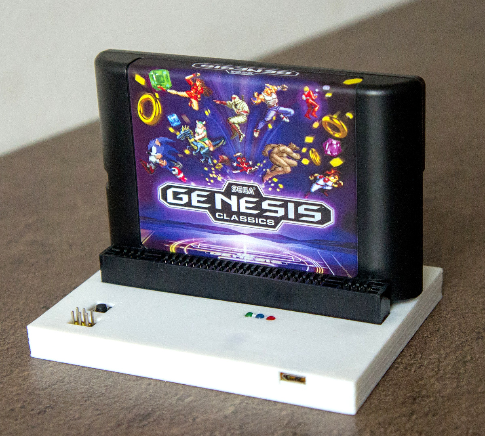
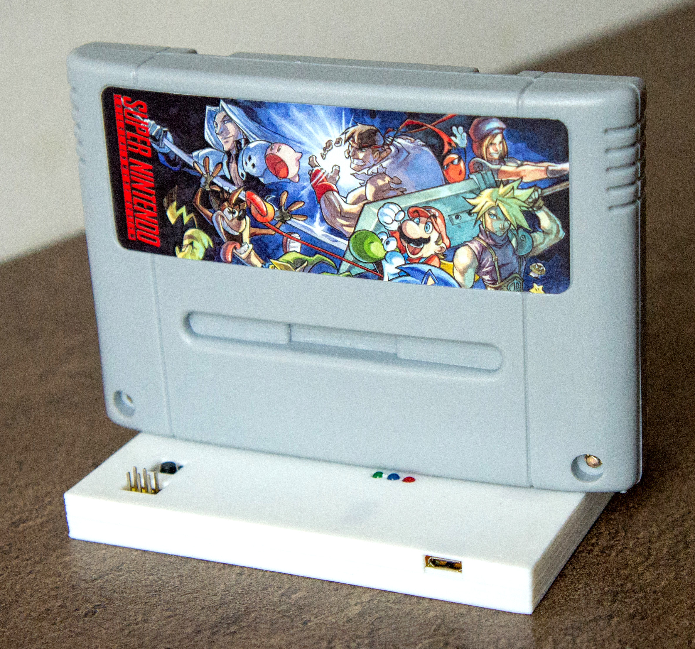
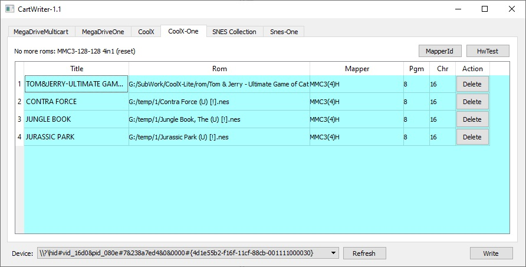
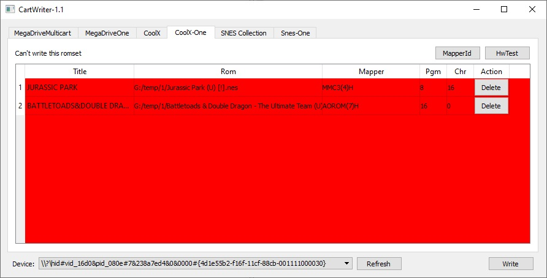

CartWriter

CartWriter позволяет записывать одноигровки, многоигровки на 3 платформы: Famicom(Денди), Sega Genesis, SNES.
Записывать можно только картриджи моего производства!
Подключение к компьютеру осуществляется при помощи кабеля microusb, желательно использовать максимально короткий кабель, так как при использовании длинного кабеля проседает напряжение, что может привести к сбоям.
Кнопка - позволяет сделать сброс, после некоторых ошибок необходимо ее нажать, или переткнуть кабель microusb.
Зеленый светодиод - сигнализирует об активность передачи данных по USB. Если в процессе работы мигает - значит все в порядке.
Синий светодиод - визуализирует бит данных при общении с картриджем.
Красный светодиод - визуализирует состояние контакта "запись", не путать с режимом записи.
Разъем ISP - используется для перепрошивки CartWriter устройства.
Картриджи необходимо устанавливать картинкой вперед (направленной на светодиоды), или же сторона платки с подписью "Front Side" должна смотреть на светодиоды.
Famicom/Денди:

Sega Genesis/MegaDrive:

SNES:

Последняя версия софта: CartWriter-1.1
Основное окно программы:

Если вы подключили устройство перед запуском программы, тогда устройство должно автоматически определится (нижняя часть окна Device:), иначе нужно нажать на кнопку Refresh внизу окна.
В верхней части окна можно быбрать одну из шести вкладок - тип картриджа:
MegaDriveMulticart - многоигровка SegaGenesis/MegaDrive
MegaDriveOne - одноигровка SegaGenesis/MegaDrive
CoolX - многоигровка Famicom/Денди
CoolX-One - одноигровка Famicom/Денди
Snes Collection - многоигровка SNES (не готово)
Snes One - одноигровка SNES
Одноигровка Famicom/Денди
На одноигровке расположены 4 чипа памяти, 2 флеша по 512КБ и 2 оперативной памяти, чтобы покрыть практически все типы маперов. Для записи необходимо переключить программу на вкладкуCoolX-One, а затем перетянуть один или несколько ромов игры.

Маппер, а так же конфигурация памяти должна совпадать. Если игра использует 128КБ програмной памяти и 128КБ видеопамяти, значит можно будет записать 4 игры (512/128 = 4), переключать которые можно будет при помощи кнопки Reset на консоле.

Если задний фон стал зеленым - значит невозможно добавить больше игр. Удалить игру из списка можно нажав кнопку Delete напротив игры.

Если игра не поддерживается, или неправильная конфигурация мапперов тогда задний план будет подсвечен красным.
Цена устройства 500грн.
Связатся со мной можно по Viber, Telegram, Телефон +380992028599 Кузнецов Евгений
Отправка: новая почта/укрпочта. Оплата: наложка/приват